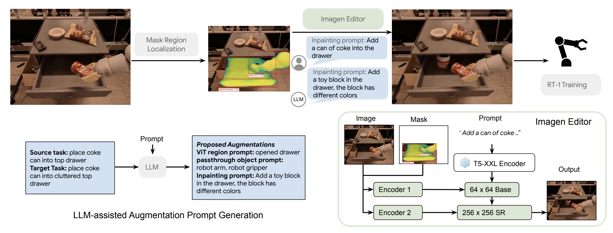
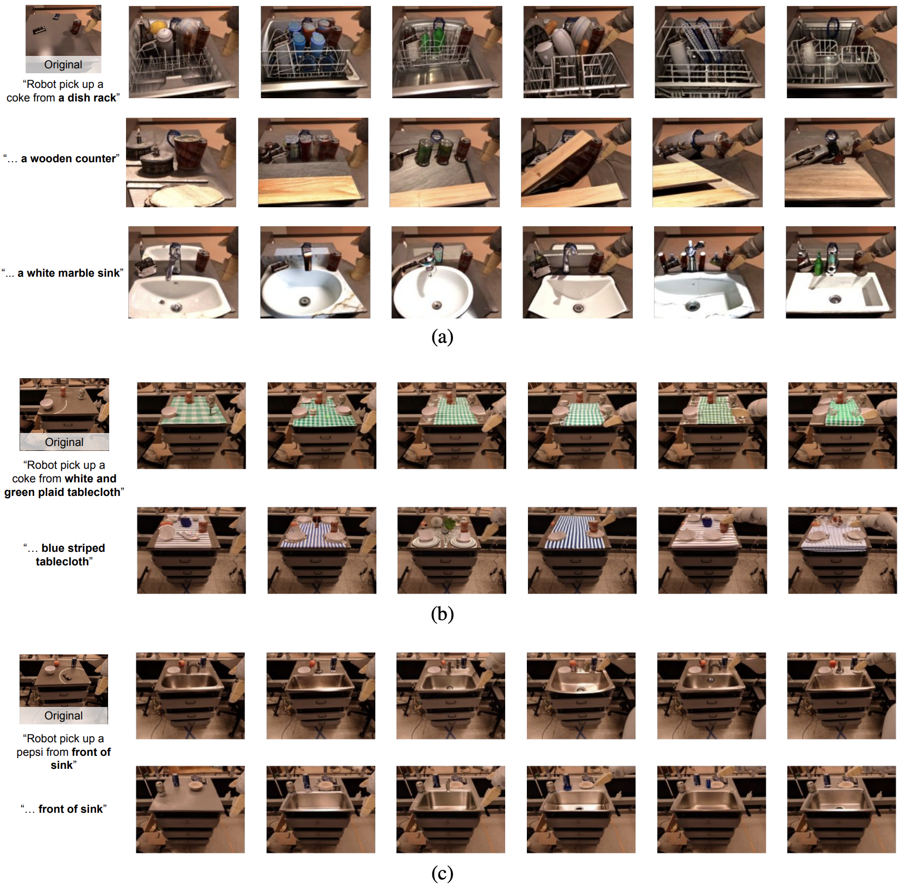
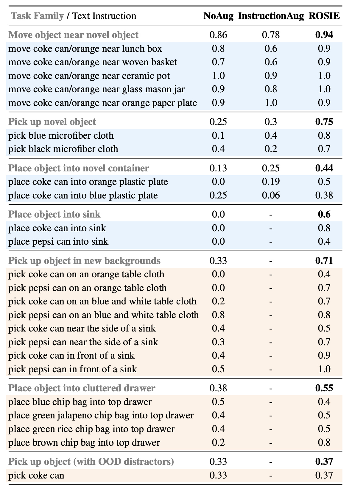

Click on a word below and Imagen!
A robot arm picking up ablue red
solid striped microfiber cloth
from a counter sink none
full of bowls fruits
We propose using text-guided diffusion models for data augmentation within the sphere of robot learning. These augmentations can produce highly convincing images suitable for learning downstream tasks. As demonstrated in the video, we can augment the background to virtually place the robot in arbitrary backgrounds guided by natural language.
Recent advances in robot learning have shown promise in enabling robots to perform a variety of manipulation tasks and generalize to novel scenarios. One of the key contributing factors to this progress is the scale of robot data used to train the models. To obtain large-scale datasets, prior approaches have relied on either demonstrations requiring high human involvement or engineering-heavy autonomous data collection schemes, both of which being challenging in scaling up the space of new tasks and skills needed for building generalist robots. To mitigate this issue, we propose to take an alternative route and leverage text-to-image foundation models widely used in computer vision and natural language processing to obtain meaningful data for robot learning without requiring additional robot data. Specifically, we make use of the state of the art text-to-image diffusion models and perform aggressive data augmentation on top of our existing robotic manipulation datasets via inpainting of various unseen objects for manipulation, backgrounds, and distractors with pure text guidance. Through extensive real-world experiments, we show that manipulation policies trained on the augmented data are able to solve completely unseen tasks with new objects and can behave more robustly w.r.t. novel distractors. In addition, we also find that we can improve the robustness and generalization of high-level robot learning tasks such as success detection through training with the diffusion-based data augmentation.
Though recent progress in robotic learning has shown the ability to learn impressive tasks, it has largely been limited to domains with few tasks and constrained environments. One of the fundamental reasons for these limitations is the lack of diverse data that covers not only a large variety of motor skills, but also a variety of objects and visual domains. This becomes apparent by observing more recent trends in robot learning research – when scaled to larger, more diverse datasets, current robotic learning algorithms have demonstrated promising signs towards more robust and performant robotic systems. However, this promise comes with an arduous challenge: it is extremely difficult to significantly scale-up varied, real-world data collected by robots as it requires either engineering-heavy autonomous schemes such as scripted policies or laborious human teleoperations. To put it into perspective, it took 17 months and 13 robots to collect 130k demonstrations in RT-1. While some works have proposed a potential solution to this conundrum by generating simulated data to satisfy these robot data needs, they come with their own set of challenges such as generating diverse and accurate enough simulations or solving sim-to-real transfer. Can we find other ways to synthetically generate realistic diverse data without requiring realistic simulations or actual data collection on real robots?
Recent text-to-image diffusion models, like DALL-E 2 or Imagen allow us to move beyond traditional data augmentation. First, these models can augment semantic aspects through natural language input. Second, they can generate images without ever having seen real-world examples. Third, they can modify an image without changing any meaningful parts.
These capabilities all allow us to create realistic scenes with objects that the robot has never interacted with or backgrounds that it's never seen before. This means that we can take internet-scale data and distill it into robot experience. ROSIE (Robot Learning with Semantically Imaged Experience), is the data augmentation approach proposed in this paper. It follows these steps: it parses instructions from humans and identifies portions of scenes which need to change. It then uses inpainting to modify only those areas, leaving the other elements intact. This results in new instructions and semantically-labelled data which teach the robot new tasks.
ROSIE was evaluated on a large set of robotic data. The data was used to train a robot policy, which was then able to perform new tasks and it also improved the ability to detect success, particularly in out-of-distribution (OOD) scenarios.

The proposed architecture of ROSIE. First, we localize the augmentation region with open vocabulary segmentation model. Second, we run Imagen Editor to perform text-guided image editing. Finally, we use the augmented data to train an RT-1 manipulation policy. Concretely, we explain ROSIE using the example shown in the figure as follows. We take the original episode with the instruction “place coke can into top drawer” and the goal is to add distractors in the opened drawer to improve the robustness of the policy. For each image in the episode, we detect the masks of the open drawer, the robot arm, and the coke can using our first step. We obtain the mask of the target region to add the distractor via subtracting the masks of the robot arm and the coke can that is picked up from the mask of the open drawer. Then, we generate our augmentation proposal leveraging LLMs. We run Imagen Editor with the augmentation text and the selected mask to generate a coke can in the drawer. We combine both the original episodes and the augmented episodes and perform policy training using multi-task imitation learning.
We show visualizations of the episodes generated by ROSIE where we replace the regular tabletop in front of the robot with a dish rack, a marble sink and a wooden counter, which never appears in the training dataset.We can also pinpoint the augmentation to a small region of the image, as is shown in the video, where we change the object in the drawer. Furthermore, we are able to augment in-hand objects, as is shown in the last part of this video.

In this table we show the full Experimental Results for ROSIE. The blue shaded results correspond to RQ1 and the orange shaded results correspond to RQ2. For each task family from top to the bottom, we performed evaluations with 50, 20, 16, 10, 80, 40, and 27 episodes respectively (243 episodes in total). ROSIE outperforms NoAug (pre-trained RT-1 policy) and InstructionAug (fine-tuned RT-1 policy with instruction augmentation) in both categories, suggesting that ROSIE can significantly improve the generalization to novel tasks and robustness w.r.t. different distractors. For RQ3 results please refer to our paper.We show an episode augmented by ROSIE (left) where ROSIE inpaints the metal sink onto the top drawer of the counter and a rollout of policy trained with both the original episodes and the augmented episodes in a real kitchen with a metal sink. The policy successfully performs the task “place pepsi can into sink” even if it is not trained on real data with sink before, suggesting that leveraging the prior of the diffusion models trained with internet-scale data is able to improve generalization of robotic learning in the real world.
We show an augmented by ROSIE (left), where we inpaint the green rice chip bag into microfiber cloth of different colors, and the policies trained on the mixed dataset gets rolled out on the right. RT-1 trained on mixed data has a higher chance of picking up the microfiber cloths.

blue red
solid striped microfiber cloth
from a counter sink none
full of bowls fruits
The authors would like to thank Pierre Sermanet for early discussions, and Alex Irpan, Quan Vuong, and Vincent Vanhoucke for feedbacks on an early draft.
The website template was borrowed from Jon Barron.